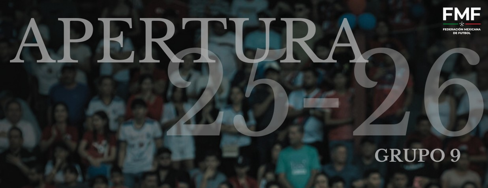

Consulta todos los partidos de Alebrijes Teotihuacán en la Liga TDP
| Jornada | Día | Local | Resultado | Visitante | Fecha | Hora | Estadio |
|---|---|---|---|---|---|---|---|
| J1 | Viernes | Alebrijes Teotihuacán | 1 - 4 | Bombarderos de Tecámac FC | 05 Sep 2025 | 12:00 hrs | Centro Recreativo Pascual |
| J2 | Viernes | Pachuca | 4 - 1 | Alebrijes Teotihuacán | 12 Sep 2025 | 10:00 hrs | Universidad del Fútbol |
| J3 | Viernes | Alebrijes Teotihuacán | 0 - 3 | Club Hidalguense | 19 Sep 2025 | 12:00 hrs | Centro Recreativo Pascual |
| J4 | Domingo | Héroes de Zaci Hidalgo | 3 - 5 | Alebrijes Teotihuacán | 27 Sep 2025 | 16:00 hrs | Horacio Baños González |
| J5 | Viernes | Alebrijes Teotihuacán | 2 - 0 | Milenarios de Oaxaca | 03 Oct 2025 | 12:00 hrs | Centro Recreativo Pascual |
| J6 | Viernes | Sk Sport Street Soccer FC | 10 - 0 | Alebrijes Teotihuacán | 10 Oct 2025 | 12:00 hrs | Primero de Mayo |
| J7 | Viernes | Alebrijes Teotihuacán | 2 (4) - (5) 2 | Lonsdaleíta FC | 17 Oct 2025 | 12:00 hrs | Centro Recreativo Pascual |
| J8 | Viernes | ATLÉTICO TOLTECAS F.C. | 6 - 1 | Alebrijes Teotihuacán | 24 Oct 2025 | 18:00 hrs | Parque 7 de Agosto |
| J9 | Viernes | Alebrijes Teotihuacán | 1 - 4 | Halcones Negros F.C. | 31 Oct 2025 | 12:00 hrs | Centro Recreativo Pascual |
| J10 | Viernes | Tuzos Pachuca | 3 - 2 | Alebrijes Teotihuacán | 07 Nov 2025 | 12:00 hrs | Universidad del Fútbol |
| J11 | Viernes | Alebrijes Teotihuacán | 0 - 1 | CEFOR 3030 | 14 Nov 2025 | 12:00 hrs | Centro Recreativo Pascual |
| J12 | Sábado | Club Deportivo Muxes | 6 - 3 | Alebrijes Teotihuacán | 15 Nov 2025 | 14:30 hrs | Estadio Deportivo Oceanía |
| J13 | Viernes | Club Deportivo Matamoros | 2 - 0 | Alebrijes Teotihuacán | 21 Nov 2025 | 15:30 hrs | Campo 1 y 2 Zitlaltepec |
| J14 | Viernes | Alebrijes Teotihuacán | 6 - 1 | Águilas de Teotihuacán | 28 Nov 2025 | 12:00 hrs | Centro Recreativo Pascual |
| J15 | Sábado | Atlético Huejutla | 1 - 3 | Alebrijes Teotihuacán | 06 Dic 2025 | 16:00 hrs | Unidad Deportiva Cruz Blanca |
| J16 | Sábado | Bombarderos de Tecámac FC | - | Alebrijes Teotihuacán | 17 Ene 2026 | 16:00 hrs | Deportivo Sierra Hermosa |
| J17 | Viernes | Alebrijes Teotihuacán | - | Pachuca | 23 Ene 2026 | 12:00 hrs | Centro Recreativo Pascual |
| J18 | Sábado | Club Hidalguense | - | Alebrijes Teotihuacán | 31 Ene 2026 | 12:00 hrs | Club Hidalguense |
| J19 | Viernes | Alebrijes Teotihuacán | - | Héroes de Zaci Hidalgo | 06 Feb 2026 | 12:00 hrs | Centro Recreativo Pascual |
| J20 | Viernes | Milenarios de Oaxaca | - | Alebrijes Teotihuacán | 13 Feb 2026 | 12:00 hrs | Centro Recreativo Pascual |
| J21 | Martes | Alebrijes Teotihuacán | - | Sk Sport Street Soccer FC | 17 Feb 2026 | 12:00 hrs | Centro Recreativo Pascual |
| J22 | Domingo | Lonsdaleíta FC | - | Alebrijes Teotihuacán | 22 Feb 2026 | 11:00 hrs | Revolución Mexicana |
| J23 | Viernes | Alebrijes Teotihuacán | - | ATLÉTICO TOLTECAS F.C. | 27 Feb 2026 | 12:00 hrs | Centro Recreativo Pascual |
| J24 | Sábado | Halcones Negros F.C. | - | Alebrijes Teotihuacán | 07 Mar 2026 | 19:00 hrs | Municipal Claudio Suárez |
| J25 | Viernes | Alebrijes Teotihuacán | - | Tuzos Pachuca | 13 Mar 2026 | 12:00 hrs | Centro Recreativo Pascual |
| J26 | Sábado | CEFOR 3030 | - | Alebrijes Teotihuacán | 21 Mar 2026 | 11:00 hrs | Titanium Soccer |
| J27 | Viernes | Alebrijes Teotihuacán | - | Club Deportivo Muxes | 27 Mar 2026 | 12:00 hrs | Centro Recreativo Pascual |
| J28 | Viernes | Alebrijes Teotihuacán | - | Club Deportivo Matamoros | 03 Abr 2026 | 12:00 hrs | Centro Recreativo Pascual |
| J29 | Sábado | Águilas de Teotihuacán | - | Alebrijes Teotihuacán | 11 Abr 2026 | 10:45 hrs | Deportivo Braulio Romero |
| J30 | Viernes | Alebrijes Teotihuacán | - | Atlético Huejutla | 17 Abr 2026 | 12:00 hrs | Centro Recreativo Pascual |